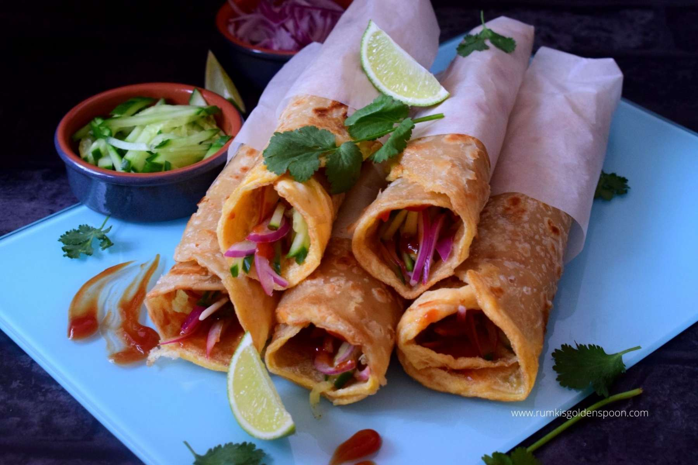

Kolkata Style Egg Roll

Description
Kolkata Style Egg Roll is an iconic dish from the streets of Kolkata, West Bengal, with thinly sliced veggies, eggs, a sprinkle of chat masala, and a drizzle of ketchup wrapped in flaky parathas. A Perfect combination of veggies, protein, and carbs these versatile rolls make for a delicious and filling breakfast, snack, and a light meal.
Ingredients
- 4 Kawan Parathas
- 4 eggs
- 2 tablespoons milk
- 1/2 teaspoon kosher salt
- 1/2 teaspoon Black pepper freshly ground
- 1/2 teaspoon ground turmeric
- 1 small red onion thinly sliced
- 2 green chilies finely chopped
- 1 small Persian cucumber thinly sliced
- 1/2 red pepper thinly sliced
- 1/2 lime
- 1/4 cup cilantro
- 1 teaspoon chaat masala
- Ketchup
Note: Ingredients listed above are for 4 rolls. Please adjust the ingredients accordingly.
Steps to prepare
- To a bowl add onions, cucumbers, red pepper and green chilies. Squeeze lime juice. Add chaat masala abd mix well.
- Next, cook Paraths as per the package directions.
- Crack an egg in a bowl. Add 1/4 of the milk, a pinch each of salt, black pepper, and turmeric. Whisk well.
- In the same pan used to cook the paratha, drizzle and spread A few drops of oil. Spread the egg mixture on the pan. Place the cooked paratha over the egg mixture. Cook for a few minutes and then carefully it flip over.
- Add onions in the middle of the paratha, layer over cucumbers, red pepper and cilantro. Squeeze lime juice and sprinkle 1/4 of chaat masala.
- Drizzle over ketchup and roll the paratha. Optionally wrap it in parchment paper for a perfect on the go meal.
- Repeat with remaining parathas and eggs.